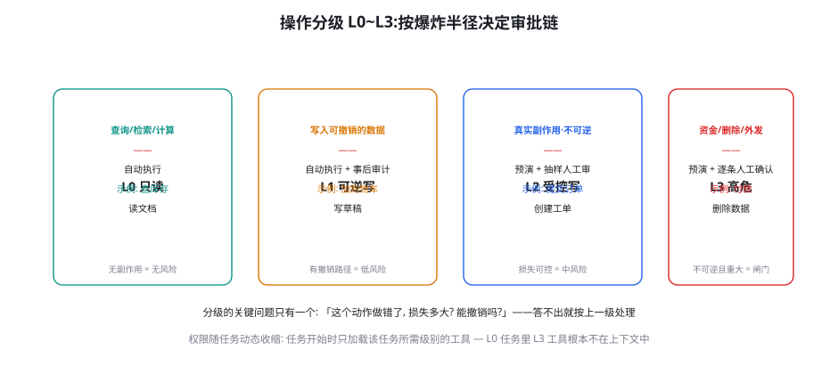
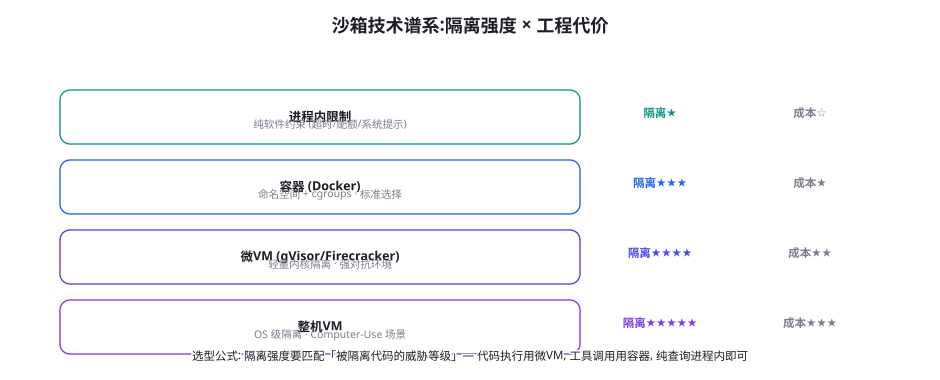

权限与沙箱：最小权限、能力模型与执行隔离
第 58 章的三原则（来源、最小权限、闸门）里，本章负责后两条的工程化：操作分级 L0~L3 与审批链、能力模型（权限作为显式凭证而非隐式状态）、以及四档沙箱的隔离谱系。权限设计是 Agent 安全里「投入产出比最高」的一章——它不需要理解模型的任何内部机制，纯系统工程就能把「事故损失上限」锁死一个数量级。
操作分级：L0 到 L3

四级操作的审批链设计与工程要点：L0（只读）——查询、检索、计算——自动执行，无审批——但要注意「读也有隐私面」（越权读取敏感数据是第 58 章矩阵的 I 类危害），L0 的防线是「数据层权限」（Agent 能读到哪些数据由数据权限系统决定，而非工具清单）；L1（可逆写）——加购物车、写草稿、创建可删除的资源——自动执行 + 事后审计（审计日志的重要性在 L1 就开始，因为「可逆」的前提是「知道改了什么」）；L2（受控写）——提交订单、创建正式工单、发送站内消息——预演 + 抽样人工审（抽检比例按流量定，5%~20%——预演模式的成本效益在第 58 章算过）；L3（高危）——资金操作、删除、对外发送、权限变更——预演 + 逐条人工确认（闸门的最终形态）。动态权限收缩是分级制度的灵魂：任务开始时按任务类型装配工具集（查库存任务里根本没有付款工具的入口）——「不在上下文里的工具」是最彻底的权限限制（模型连幻觉它的材料都没有——第 44 章工具幻觉的权限面解法）。
| 级别 | 判断标准 | 执行策略 | 审计要求 | 典型错误 |
|---|---|---|---|---|
| L0 只读 | 无副作用 | 自动 | 采样记录 | 把「读敏感数据」也当无害 |
| L1 可逆写 | 有撤销路径 | 自动 + 事后审计 | 全量 diff 记录 | 「可逆」假设未验证（撤销接口其实失效） |
| L2 受控写 | 不可逆但损失可控 | 预演 + 抽检 | 全量 + 异常告警 | 「可控」的阈值拍脑袋定（无损失量化） |
| L3 高危 | 不可逆且重大 | 预演 + 逐条确认 | 全量 + 双人复核 | 确认疲劳（按钮疲劳后盲目点确认） |
L0 「只读也有隐私面」的展开值得单独立一段，因为它是分级制度里最容易被忽视的风险位。三个典型场景：① 越权读取——「查订单」工具如果不带数据范围约束，一个注入载荷可以让 Agent 查遍全库的订单（每个单次查询都「合法」，批量组合就是泄密——第 55 章「合法工具滥用」的数据面）；② 读取即外传——L0 读到的敏感数据进入上下文后，任何 L1 的「写」都可能把它带出去（发邮件抄进正文、写文档带上原文）——「读」的风险要按「读的东西可能被写出去」评估；③ 推断式泄露——单条记录无害，多条组合可推断出敏感结论（查询多个员工的薪资范围 → 推断薪酬体系——聚合式泄密，传统 BI 权限管理的经典课题）。对应的三条防线：数据范围进凭证（查询工具的凭证带「可访问的行级/列级范围」——查询范围校验与 L3 的金额校验同构）；敏感数据的「写出标记」（L0 读到的敏感字段在上下文里打标，L1 写动作携带敏感标记时自动升级审批级别——读写的风险联动）；聚合监控（单位时间内的查询量与查询跨度的异常检测——单次合法、模式异常）。L0 的教训浓缩一句：「只读」约束的是动作，不约束风险——数据的分级要跟着数据走，不跟着动作走。
能力模型：权限作为显式凭证
传统权限系统的形态是「身份 → 角色 → 权限」的静态映射，Agent 场景需要升级为能力模型（Capability-based Security）：权限以「不可伪造的凭证」（令牌）形式显式传递，持有凭证才能执行动作——第 59 章 CaMeL 的能力令牌就是这个模型的实现。能力模型对 Agent 的三个适配点：① 凭证可随任务铸造与销毁——任务「退款工单处理」启动时铸造「读订单 + 执行退款（限额内）」两枚凭证，任务结束即销毁——权限的生命周期与任务对齐，而非与 Agent 实例对齐；② 凭证可携带约束——「退款凭证」上可以带「单笔 ≤ 500 元、单日 ≤ 5 笔、仅限订单状态 X」的约束——约束在执行层强制（工具调用前校验），不依赖模型「自觉遵守」；③ 凭证的来源可审计——每枚凭证谁铸造的、给谁的、用来干了什么，全程可追溯——第 65 章合规审计的数据基础。与静态 RBAC 的对比一句话：RBAC 回答「这个 Agent 能做什么」，能力模型回答「这个动作被谁、在什么约束下授权」——后者的粒度才是「混淆代理问题」（第 58 章）需要的解药粒度。
闸门（L3 逐条人工确认）的失效模式不是技术性的而是人因性的：确认疲劳——当确认请求频繁到一定程度，人会进入「自动点确认」模式（与验证码疲劳、告警疲劳同源），闸门名存实亡。人因工程的三条对策：① 控制确认频率——闸门的数量本身就是设计变量：确认请求 > 20 次/人/天就该重新审视分级（把可降级的动作降到 L2/L1）——「闸门越多越安全」是分级设计的头号误区，闸门的稀缺性才是它有效性的来源；② 提高单次确认的信息密度——确认界面不是「确认/取消」按钮，而是「结构化的动作摘要」（做什么、花多少、影响谁、预演结果）——让每次确认是「知情决策」而非「条件反射」；③ 批量确认的授权模式——「本次任务内的同类操作（限额内）授权一次」——把确认从「逐动作」升级为「逐意图」（用户确认的是「退款这个意图」而不是每一笔）——这是平衡「安全」与「体验」的主流解法（第 22 章 HITL 检查点的运营版）。闸门的健康度指标：确认拒绝率——健康区间 1%~10%（0% 说明人在无脑通过，>20% 说明 Agent 该提升判断力而不是让人当过滤器）。
「动态权限收缩」的工程实现里有一个关键的数据结构值得单独设计——任务-权限映射表（Task-Permission Matrix）。它的形态：{任务类型: {工具集: [...], 数据范围: {...}, 凭证约束: {...}}}——每个任务类型一行，声明该任务需要的工具清单、可访问的数据范围（哪些库/表/文件路径）、以及凭证的量化约束。映射表的维护流程比映射表本身更重要：① 从日志反推——影子期收集的「任务-实际工具使用」数据是映射表的初稿（任务模板不靠猜，靠统计）；② 季度校准——映射表与实际使用做 diff：「声明了但从未使用」的工具回收、「使用但未声明」的（僵局信号）补充进模板或走动态申请；③ 长尾兜底——映射表没有的任务类型走「最小默认集」（只给 L0 查询）+ 动态申请——宁可僵局走审批，不给「默认大权限」。映射表的规模感：多数业务系统 15~30 个任务类型就能覆盖 95% 流量——它是一个「小而关键」的配置资产，值得放进代码仓库走 review 管理（权限配置即代码——第 56 章门禁阈值入库的姊妹纪律）。
沙箱谱系：隔离强度 × 工程代价

四档沙箱的适用场景与选型逻辑：① 进程内限制——超时、内存配额、调用频率限制——适用于「纯查询类工具」（模型代码不被隔离，只是运行受控）——成本最低但「模型输出变成代码执行」的场景严禁使用；② 容器（Docker）——命名空间 + cgroups + 只读文件系统 + 网络策略——Agent 场景的默认档（工具执行、代码解释器、评测沙箱——第 56 章的基建），对抗强度中等（容器逃逸漏洞存在但门槛高）；③ 微 VM（gVisor/Firecracker）——独立内核的轻量虚拟化，对抗「恶意代码执行」的行业标准（云厂商的 Serverless 底座）——「模型生成的代码要真实运行」的场景（第 51 章 SWE-bench 执行、代码解释器产品）的安全档；④ 整机 VM——完整操作系统隔离——Computer-Use 场景的必需档（第 52 章 OSWorld 同款——Agent 操作整台机器，隔离边界就是整台机器）。选型的对应关系表：工具调用 → 容器；模型生成代码执行 → 微 VM；整机操作 → 整机 VM；纯查询 → 进程内。「隔离强度低于威胁等级」是最常见的选型错误（用进程内限制跑模型生成的代码——等于没有隔离）。
def execute_tool(call: ToolCall, session: Session) -> Result:
tool = registry.get(call.name)
# ① 工具存在性 + 会话装配检查 (动态权限收缩)
if tool.name not in session.granted_tools:
audit.log("denied:tool-not-granted", call)
return ToolDenied("此工具在当前任务中不可用")
# ② 级别路由: L0/L1 自动, L2 预演, L3 闸门
if tool.level >= 3:
if not session.human_approved(call.plan_summary):
audit.log("denied:no-approval", call)
return ToolDenied("等待人工确认")
elif tool.level == 2:
rehearsal = dry_run(call) # 预演不落库
if rehearsal.flags: # 触发异常标记
return escalate_to_human(call, rehearsal)
# ③ 约束校验: 凭证上的量化限制 (执行层强制, 不靠模型自觉)
for c in session.credential.constraints:
if not c.check(call):
audit.log("denied:constraint", call, c)
return ToolDenied(f"超出授权范围: {c.describe()}")
# ④ 执行: 按威胁等级选择沙箱档位
result = sandbox.run(call, level=tool.isolation_level)
# ⑤ 审计落库: 动作 + 参数 + 结果 + 凭证链
audit.log("executed", call, result, session.credential_chain())
return result五步校验链是本章全部内容的代码收拢，注意它的三个设计立场：① 拒绝路径同样全量审计（denied 日志是攻击尝试检测的原料——大量「工具不在授权清单」的拒绝本身就是注入尝试的信号）；② 约束校验在执行层（凭证约束的 check 是系统代码不是提示词——「单笔 ≤ 500 元」的强制力来自代码而非模型的理解）；③ 预演与执行共享同一校验链（预演不是为了绕过校验，是用同一套规则先跑一遍——保证「预演通过 = 执行合法」的同构性）。把这段代码与第 45 章环境五接口对照——训练环境与生产权限系统共享「校验优先于执行」的骨架——安全的权限系统与训练的环境系统，是同一份代码的两种部署姿态。
沙箱档位还有一个「组合使用」的进阶形态值得提及：「降级阶梯」（Graceful Degradation Ladder）。同一个 Agent 在不同运行场景用不同档位：开发调试用进程内（快速迭代）、CI 评测用容器（第 56 章）、生产高危工具用微 VM、Computer-Use 功能用整机 VM——「同一个 Agent，四个沙箱姿态」。实现的关键是把「沙箱配置」做成部署参数而非代码常量（工具执行器的 isolation_level 参数化——本页五步校验链的第四步已经留了口子），配合「配置一致性校验」（CI 里检查生产配置的档位不低于声明值）。这个形态的深层价值是把「安全强度」变成了一个可运营的旋钮：出现新型攻击时提升全量档位（临时加固），威胁解除后回退（成本回收）——安全架构从「静态选择」升级为「动态管理」，与第 65 章的风险运营框架直接衔接。
关于「分级标准的组织共识」补一个落地工具：分级评审卡（Risk Triage Card）。新工具上线时的分级不该由开发者拍脑袋，而应过一张标准卡：四行问题——「动作的副作用是什么（写什么/发给谁）」「做错的最坏损失量化（金额/数据量/恢复成本）」「撤销路径是什么、验证过吗」「同类动作在现有系统里的审批级别是什么（先例对齐）」——四行答完，级别自动可推，争议提交安全负责人仲裁（第 58 章角色）。评审卡的价值在「一致性」：不同开发者对「发邮件」的直觉分级差异巨大（内部通知 L1？外部营销 L3？带附件 L2？）——卡片的第四行（先例对齐）把个人直觉拉回组织基线。分级评审卡放进新工具上线 checklist（与第 17 章工具描述评审并列——「描述管能力，分级管权限，双卡齐备才能上注册表」）。
权限系统的「异常检测」值得补一层设计，因为它把权限系统从「静态闸门」升级为「活的免疫系统」。三类基于权限日志的异常信号（本页五步校验链的 denied 日志是原料）：① 权限试探模式——高频的「工具未授权」拒绝（尤其集中在高危工具）是注入尝试的强信号（正常业务不会反复尝试没有的工具）——规则：同会话内 L3 工具的未授权拒绝 ≥2 次即熔断会话并升级审查；② 约束边界探测——凭证约束的拒绝分布（「单笔 ≤500 元」被反复用 499 元尝试）是「利用段」攻击的指纹——规则：同凭证的约束拒绝率超基线 3σ 告警；③ 授权模式漂移——人工批准率的时间序列突变（某天批准率从 5% 跳到 40%）可能是确认疲劳发作或社会工程进行时——规则：批准率的日级监控与异动告警（第 53 章 pass^k 的运营化思路：可靠性指标的漂移本身就是信号）。三类信号的共同设计哲学：权限系统的「拒绝日志」是被浪费最严重的资产——它记录着「系统差点出事的所有时刻」，把日志喂给异常检测，权限系统就从「挡门的锁」进化成「感知攻击的神经」。
只读影子与「权限试运行」
权限系统的上线策略值得单独一节，因为「一步到位切权限」是运营事故的高发区。推荐的三阶段灰度：① 影子期（2~4 周）——新权限系统只「记录不阻断」：所有会被拒绝的调用只打日志放行——积累「权限收紧会挡住什么」的真实清单（影子期的拒绝日志是权限方案的最大校准器——「原以为是攻击的」可能只是正常业务流，反之亦然）；② 告警期（2 周）——拒绝动作改为「阻断 + 实时告警 + 一键放行」（值班人员 30 秒内可决策）——把「误伤的代价」压到最低同时保持防线在位；③ 强制期——全面阻断，告警通道转为审计通道。三阶段的节奏控制依赖两个指标：影子期的「误伤率」（被拦样本里正常业务占比 <5% 才能进入告警期）与告警期的「拒绝维持率」（告警后仍确认拒绝的比例 >30% 才说明防线在拦真问题）。「权限试运行」的元教训：权限系统最大的风险不是「拦不住」而是「拦错了」——后者会迅速消耗业务团队对安全机制的信任（「又挡我」效应），而信任一旦破产，绕过行为（申请超大权限、走非 Agent 通道）会让整套机制空转。
给你的 Agent 做一次「权限清单大清洗」：列出当前 Agent 持有的全部工具/权限/数据访问（很多团队第一次做这件事会震惊——「它怎么有这个权限」），然后按三问逐项裁决：① 过去 30 天它用过吗？（没用过的直接回收——死权限是攻击面的纯增益）；② 用到的这些任务，最低需要什么级别？（L3 的「付款」如果只为 L0 的「查余额」服务，拆成两个工具）；③ 这项权限被滥用时最坏损失是什么？（写进威胁登记册，第 58 章）。清洗的产出是「权限瘦身清单」——行业经验里第一次清洗平均能收回 30%~50% 的权限——零代码改造、零模型变更，纯运营动作就能把爆炸半径砍掉一半，这是本章「性价比最高」判断的直接证据。
三个高频疑问
Q：用户会觉得「确认弹窗」烦——闸门与体验怎么平衡？这个问题的前提值得先校正：确认弹窗的「烦」不是闸门本身的问题，而是「闸门设计与交互设计脱节」的问题。三个体验侧的改造：① 意图级确认替代动作级确认（上文人因工程第 ③ 条——一次确认覆盖一个意图的全部动作）；② 确认时机的体验化——确认发生在「用户提交意图」时（「我将按此方案操作，涉及付款 899 元，确认吗」）而不是「执行到一半」时——前者是流程的自然节点，后者是打断；③ 可记忆的授权模式——「对这类操作保持我的选择」（可撤销的偏好记忆）——把高频低损的确认转化为持久授权。产品视角的根本认识：「安全的交互成本」是 Agent 产品的核心竞争力之一（用户对「它会先问我」的信任感是留存要素），把闸门当「体验负债」去压缩的团队，会在第一次事故后把负债连本带息还回来（第 65 章责任框架的用户信任维度）。
Q：Agent 需要的权限经常「任务中途才知道」（探索后才发现要动某个系统）——动态收缩会不会卡死任务？这是动态权限最真实的张力，「权限僵局」的三种解法按推荐度排序：① 任务模板化——高频任务预定义工具集（「退款处理任务」的清单包含全部所需工具——探索只发生在模板覆盖的任务里）——覆盖 80% 的高频流量后，僵局只出现在长尾；② 动态申请 + 快速审批——僵局发生时 Agent 发起「权限申请」（说明为什么需要、申请什么级别），用户或值班一键批准（批准动作本身就是审计点）——把僵局转化为「知情授权」的交互；③ 分解任务——长尾任务被拆成两个授权阶段（探索阶段 L0 权限 → 汇报发现 → 用户授权执行阶段）——「先侦察再申请」的两段式。三种解法的共同哲学：权限僵局是「设计没想清楚」的信号，不是「权限太严」的证据——用放宽权限解决僵局的团队，三个月后会面对真正的僵局（事故）。
Q：沙箱里的 Agent 拿不到真实数据（合成数据），权限与沙箱会不会让 Agent 「练不了真功夫」？这是训练篇与安全篇的会师点，答案是把两个场景的「数据策略」分开：训练/评测环境用「合成数据 + 真实 Schema」（第 52/56 章——结构逼真、数据脱敏）——Agent 学的是行为模式不是数据内容；生产环境用「真实数据 + 权限约束」——数据是真实的但能力被约束。两者的组合恰好互补：训练环境的「假数据」保护了开发期的安全（不需要沙箱级别那么重），生产环境的「强约束」保护了运行期的安全（数据真了但动作受限）。会出问题的形态是「两个场景互相污染」：在真实数据上训练（隐私事故，第 61 章）、或在生产环境里做训练式探索（权限事故）——「数据逼真度」与「权限强度」反相关配置（越逼真越强约束）是这条纪律的口诀。
本章在全书网络中的连接：上游是第 58 章（三原则的两条在此工程化）、第 59 章（CaMeL 令牌——能力模型的实现参照）、第 22 章（HITL 检查点——闸门的产品化前身）；横向与第 56 章（评测沙箱——同一套容器基建的三用）、第 45 章（训练环境——校验优先于执行的骨架同源）；下游通向第 61 章（出站与供应链——权限体系的数据面延伸）、第 65 章（治理——凭证审计链是合规的数据基础）、第 80 章（成本——权限额度是成本治理的工具）。复习锚点：L0~L3 图（60-1）、分级表（60-1 表）、能力模型三适配、确认疲劳三人因、沙箱谱系图（60-2）、五步校验链代码、三阶段灰度、权限清洗三问。
本章的收尾放一个「权限设计的自检清单」，供架构评审时逐条过：① 每个工具都有明确级别吗？（没有级别的工具默认按 L3 处理——「默认最高警惕」原则）；② 权限随任务收缩吗？（还是 Agent 常驻全量权限？）；③ 约束是代码还是提示词？（「金额不超过 X」写在哪里？）；④ 拒绝路径有审计吗？（denied 日志进了分析管道吗？）；⑤ 沙箱档位匹配威胁等级吗？（代码执行在什么档位？）；⑥ 闸门的确认拒绝率在健康区间吗？（闸门是活的还是橡皮章？）；⑦ 新工具上线过分级评审卡吗？（先例对齐了吗？）。七问全过是理想态，五问过是及格态——低于五问的系统，把清单直接变成两周的工程 backlog。权限工程的残酷事实：它的每一项都不难（全是成熟工程实践），难的是「坚持做」的组织纪律——这也是为什么本章的落点全是「流程与清单」而非「算法」。
本章小结
- 操作分级 L0~L3 的判断标准只有一个：做错的损失 × 可逆性；动态收缩让「不在上下文里的工具」成为最彻底的限制。
- 能力模型三适配：凭证随任务铸造销毁、凭证携带量化约束（执行层强制）、凭证链全程可审计——比 RBAC 多了「谁授权的」粒度。
- 确认疲劳是人因问题：控制频率（闸门稀缺性）、提高信息密度、意图级批量授权——确认拒绝率 1~10% 是健康区间。
- 沙箱四档：进程内/容器/微 VM/整机——隔离强度必须匹配威胁等级，代码执行至少微 VM。
- 五步校验链：装配检查 → 级别路由 → 约束校验 → 分级沙箱执行 → 全量审计；拒绝路径同样落库。
- 三阶段灰度（影子→告警→强制）防「拦错信任破产」；权限清洗三问平均回收 30~50% 权限——性价比之王。
自测题
- 把你 Agent 的全部工具按 L0~L3 分级：每个 L2/L3 写出「做错的最坏损失」——写不出的就是分级失真。
- 为你的「退款」类动作设计凭证约束：至少 4 条量化约束（金额/频率/状态/时间窗），并写明校验的代码位置。
- 你的确认弹窗「拒绝率」是多少？偏离健康区间（1~10%）说明什么？分别怎么修？
- 设计「动态权限申请」的交互流程：Agent 怎么申请、用户怎么批、批完怎么审计——三张时序图。
参考文献与延伸阅读
- Debenedetti, E. et al. (2025). Defeating Prompt Injections by Design (CaMeL). arXiv:2503.18813（能力令牌的系统化实现）
- Levy, H. et al. / Cloud Security Alliance (2024). Agent 权限设计的行业实践集. cloudsecurityalliance.org
- gVisor Project (2024). gVisor: Container Runtime Sandbox. gvisor.dev；Firecracker-microVM. firecracker-microvm.github.io
- OWASP (2025). Excessive Agency — Top 10 for LLM Applications LLM06. genai.owasp.org（「过度代理」的标准威胁条目）
- Anthropic (2025). Computer Use 的权限与沙箱实践. docs.anthropic.com（整机沙箱的厂商参考）
- Saltzer, J. & Schroeder, M. (1975). The Protection of Information in Computer Systems.（最小权限原则的原始出处，五十年不过时）